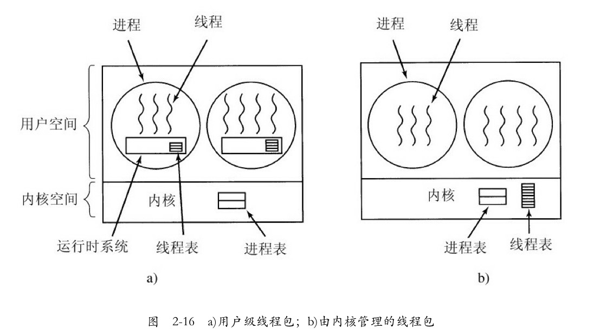

这篇文章是上一篇博客的补充，旨在把没有讲清楚的「用户级线程和内核级线程」补充完整。希望读者能对线程有更进一步的了解。
小白最近在学习多线程编程。
网上关于多线程的资料很多，小白很快就把线程的基本概念弄懂了，但关于「用户级线程和内核级线程」的概念，她却怎么也搞不清楚，只好向操作系统基础扎实的小明请教。
对于小白的问题，小明总会耐心解答：“线程里面这两个概念确实比较难理解，我先给你讲用户级线程吧。”
“既然你说你已经看过线程的基本概念，那我就直接跳过这一部分了。
很久很久之前，线程的概念是出现了，但操作系统厂商可不能直接就去修改操作系统的内核，因为对他们来说，稳定性是最重要的。贸然把未经验证的东西加入内核，出问题了怎么办？所以想要验证线程的可用性，得另想办法。”
“我知道我知道，那些研究人员就编写了一个关于线程的函数库，用函数库来实现线程！”小白得意的说：“这个我刚刚在网上看到了。”
“是的，他们把创建线程、终止线程等功能放在了这个线程库内，用户就可以通过调用这些函数来实现所需要的功能。”小明找了张纸，写上了几个函数：pthread_creat ，pthread_exit ，pthread_join ，pthread_yield ，接着说：“这是几个重要的函数，你应该能大概猜出这些函数的功能吧？”
“emmmm，让我想想，pthread_creat 是创建一个新线程，pthread_exit 是结束线程，pthread_join 嘛，我猜是准备运行某一个线程，然后把它加进就绪队列。最后一个函数我就不知道了。”
“不知道也没关系，一会你就清楚了。”小明接着讲：“要知道，刚刚我们说的线程库，是位于用户空间的，操作系统内核对这个库一无所知，所以从内核的角度看，它还是按正常的方式管理。”
小白问道：“也就是说操作系统眼里还是只有进程喽？那我用线程库写的一个多线程进程，只能一次在一个 CPU 核心上运行？”
小明点点头，说：“你说的没错，这其实是用户级线程的一个缺点，这些线程只能占用一个核，所以做不到并行加速，而且由于用户线程的透明性，操作系统是不能主动切换线程的，换句话讲，如果 A，B 是同一个进程的两个线程的话， A 正在运行的时候，线程 B 想要运行的话，只能等待 A 主动放弃 CPU，也就是主动调用 pthread_yield 函数。”
tobe 注：对操作系统来说，用户级线程具有不可见性，也称透明性。
“停一下，让我想一想，”小白飞速思考着小明的话，“是不是说，即使有线程库，用户级线程也做不到像进程那样的轮转调度？”
“非常正确！看来你对进程的概念很清楚嘛。不过呢，虽然不能做到轮转调度，但用户级线程也有他自己的好处——你可以为你的应用程序定制调度算法，毕竟什么时候退出线程你自己说了算。刚刚说了，因为操作系统只能看到进程的存在，那如果某一个线程阻塞了，你觉得会发生什么？”
“在操作系统眼里，是进程阻塞了，那么整个进程就会进入阻塞态，在阻塞操作结束前，这个进程都无法得到 CPU 资源。那就相当于，所有的线程都被阻塞了。”小白得意的回答。
“没错，所以如果任由线程进行阻塞操作，进程的效率将受到很大的影响，所以在这个过程中，出现了一个替代方案——jacket。所谓 jacket，就是把一个产生阻塞的系统调用转化成一个非阻塞的系统调用。”
小白惊讶地问：“这怎么做得到？该阻塞的调用，还能变得不阻塞？”
小明答道：“我来举个例子吧，不是直接调用一个系统 I/O 例程，而是调用一个应用级别的 I/O jacket 例程，这个 jacket 例程中的代码会检查并且确定 I/O 设备是不是正忙，如果忙的话，就在用户态下将该线程阻塞，然后把控制权交给另一个线程。隔一段时间后再次检查 I/O 设备。就像你说的，最后还是会执行阻塞调用，但使用 jacket 可以缩短被阻塞的时间。不过有些情况下是可以不被阻塞的，取决于具体的实现。”
小明停顿了一会，说：“用户级线程的概念大概就这么多，我们接下来讲内核级线程吧。”
“有了用户级线程的铺垫，内核级线程就好讲多了。现在我们知道，许多操作系统都已经支持内核级线程了。为了实现线程，内核里就需要有用来记录系统里所有线程的线程表。当需要创建一个新线程的时候，就需要进行一个系统调用，然后由操作系统进行线程表的更新。当然了，传统的进程表也还是有的。你想想看，如果操作系统「看得见」线程，有什么好处？“
小白自信的回答：“操作系统内核如果知道线程的存在，就可以像调度多个进程一样，把这些线程放在好几个 CPU 核心上，就能做到实际上的并行了。”
“还有一点你没有说到，如果线程可见，那么假如线程 A 阻塞了，与他同属一个进程的线程也不会被阻塞。这是内核级线程的绝对优势。”
“那内核级线程就没有什么缺点吗？”
“缺点当然是有的，你想想看，让操作系统进行线程调度，那意味着每次切换线程，就需要「陷入」内核态，而操作系统从用户态到内核态的转变是有开销的，所以说内核级线程切换的代价要比用户级线程大。还有很重要的一点——线程表是存放在操作系统固定的表格空间或者堆栈空间里，所以内核级线程的数量是有限的，扩展性比不上用户级线程。”
"内核级线程就这么点东西，我最后给你留一张图，你要是能看得懂，就说明你理解今天的概念了。"

小白得意地说：“我当然看得懂了，谢谢小明！”
希望你在看完我的文章之后有所收获。
感谢你的阅读，我们后会有期！
声明：原创文章，未经授权，禁止转载